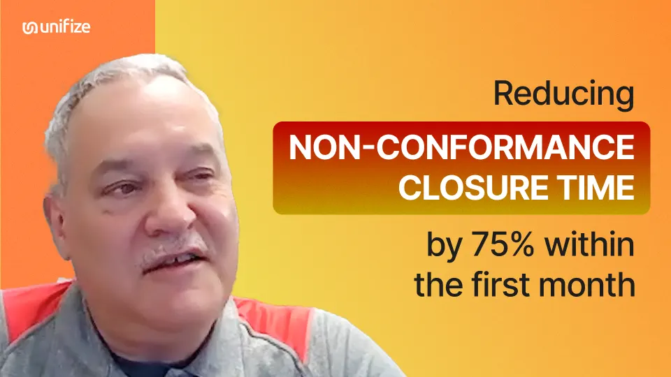
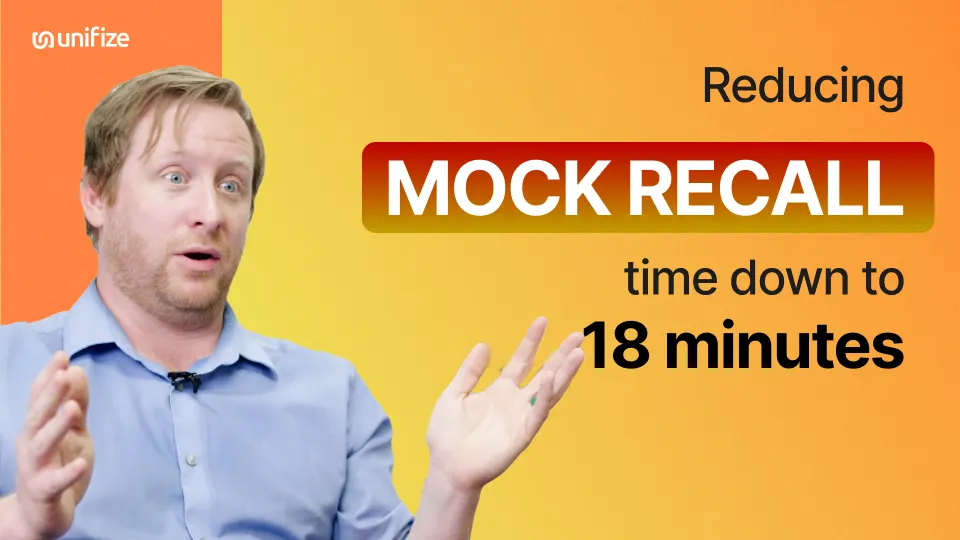
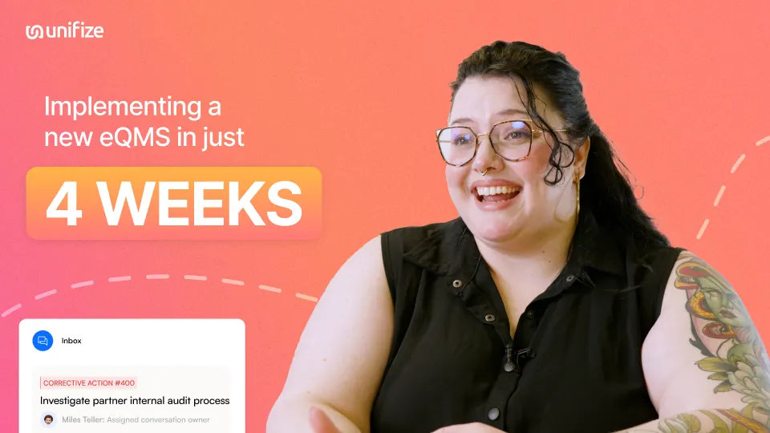
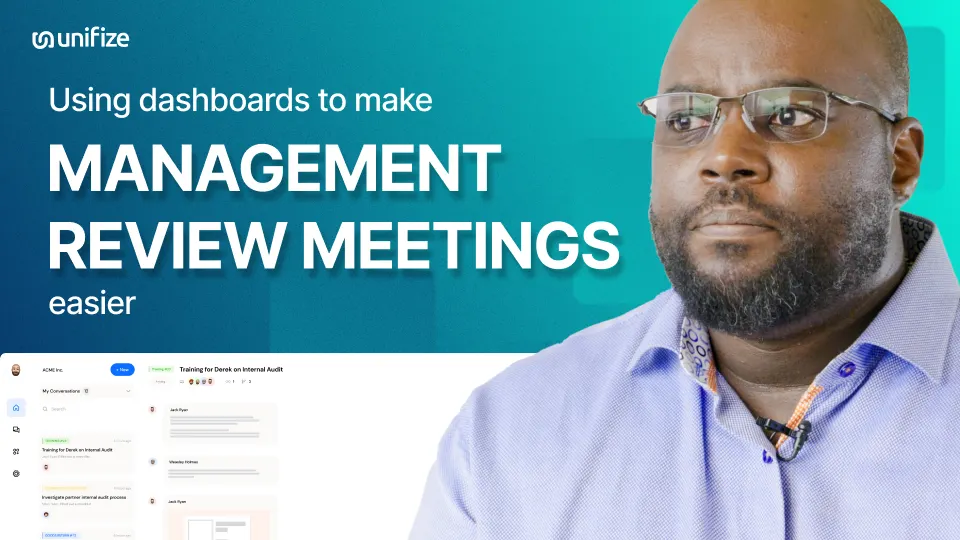
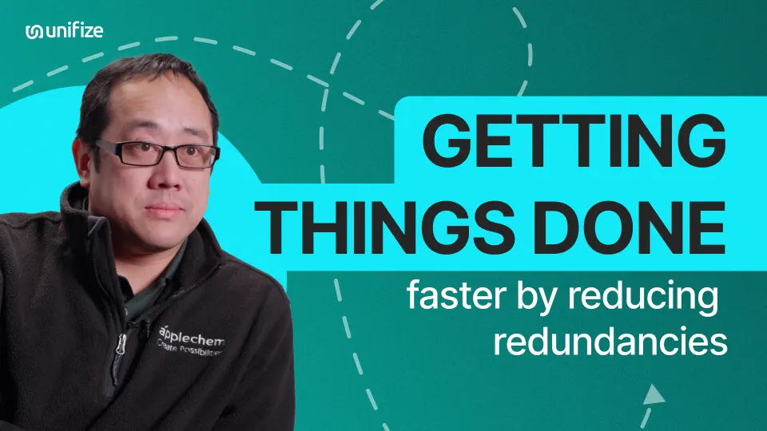
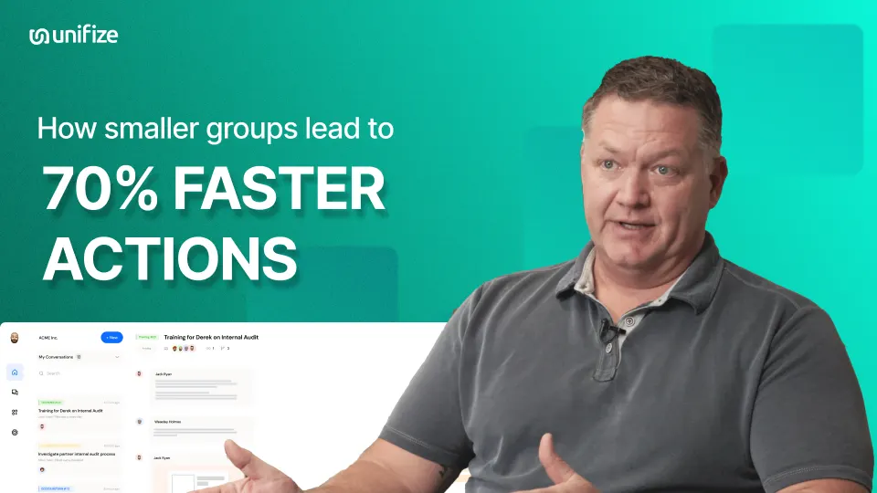

Results, in their words.
Real customers, on film. Quality directors, engineers, and operators on their own before and after: off legacy systems, live in weeks, closing work faster.

The Will-Burt CompanyTedd Carr, Director of Quality ControlNC closure time down 75% in the first month
Biovation LabsJesse Kolstad, Director of QualityAudit mock recall done in 18 minutes, not 4 hours- Harmonic BionicsMichael Hogan, Mechanical EngineerA design update no longer waits two weeks

Harmonic BionicsClarissa ArcherUp and running in about four weeks, team of five
Harmonic BionicsDenis MachokaManagement review without 15 hours of data pulling
ApplechemWilson Lin90% of the repeat status discussion cut out
Dave AndersonConstructionReaction time on issues 70% better, in smaller groups